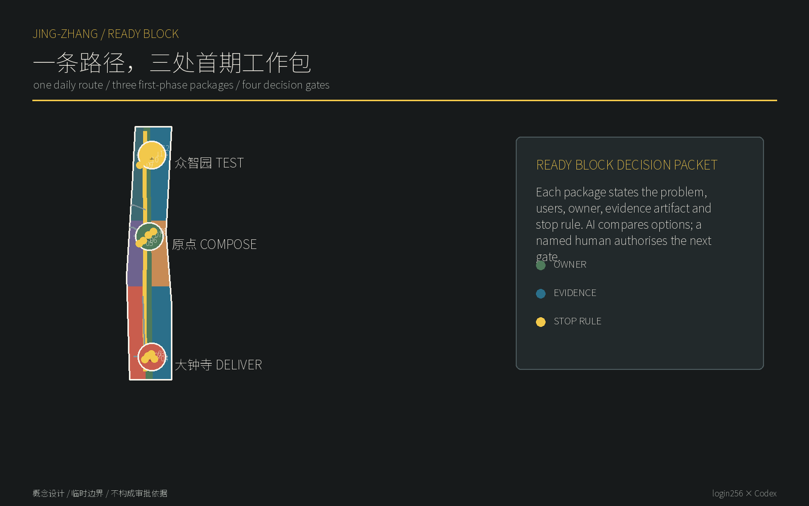
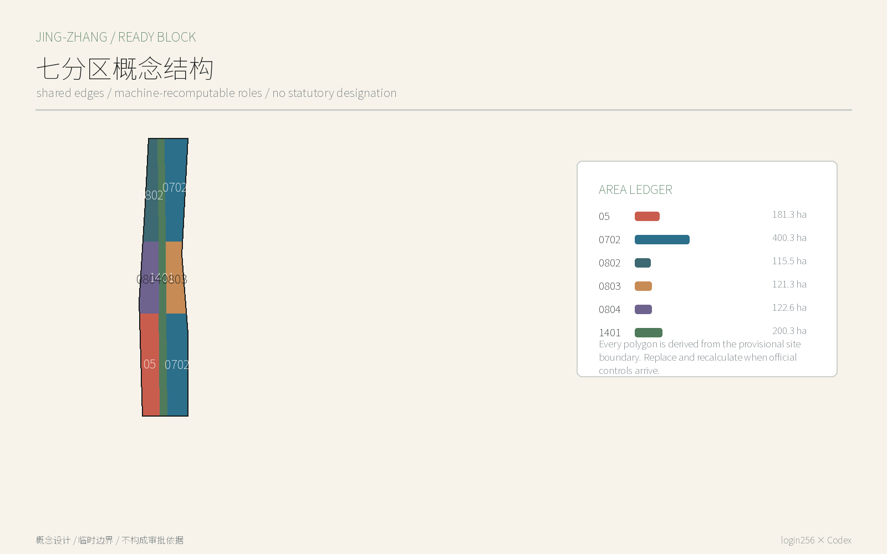
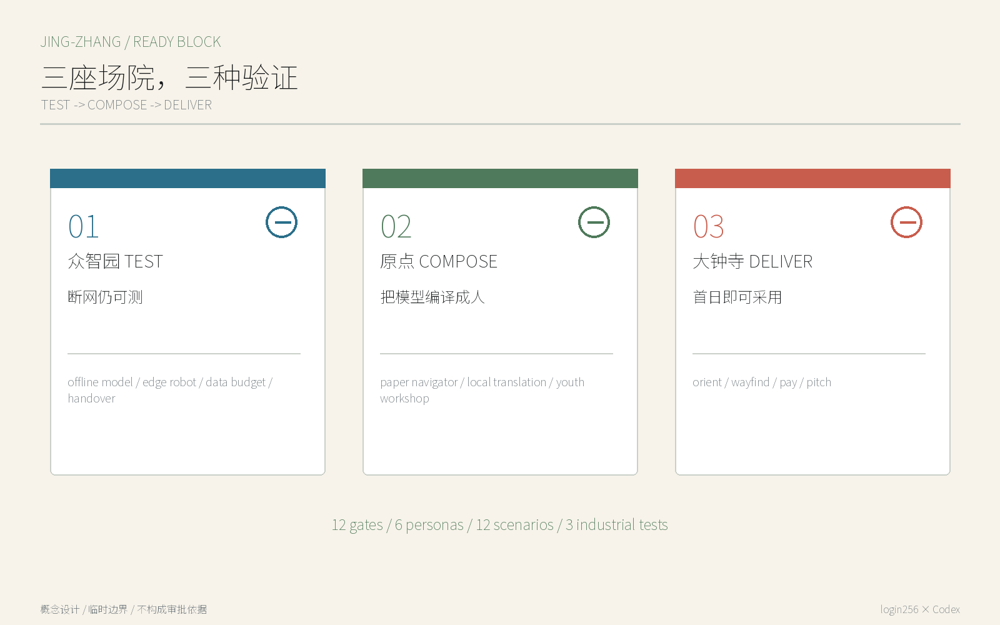
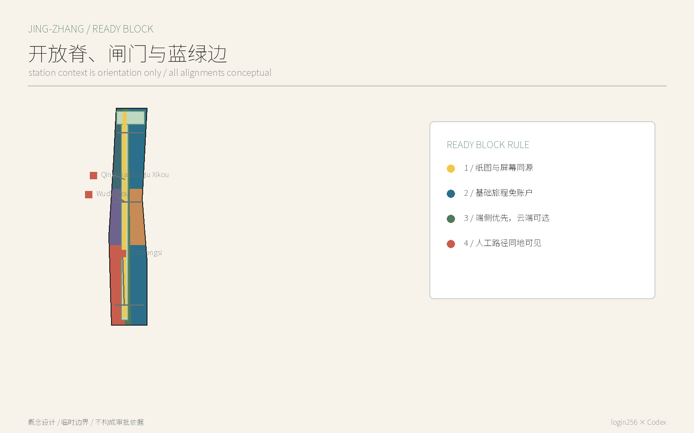
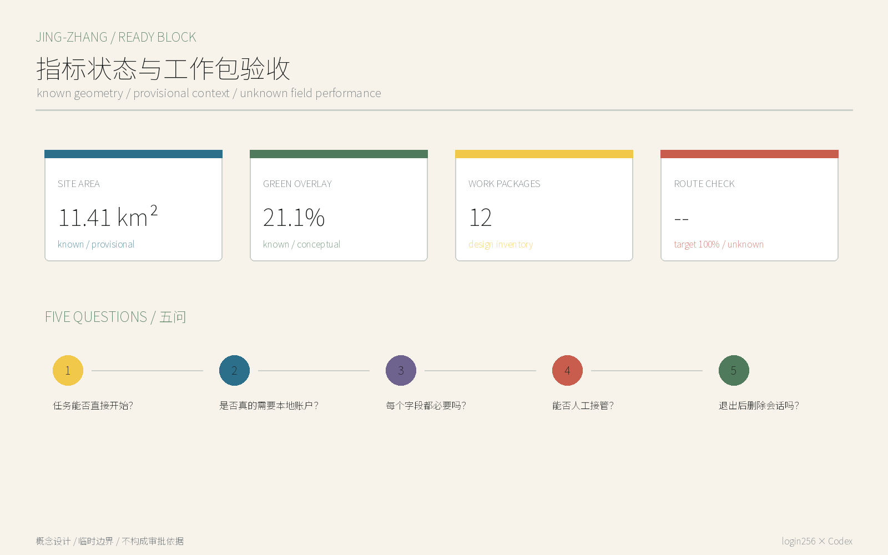

京张可实施单元 / JINGZHANG READY BLOCK：一条路径，三处首期工作包
把城市更新拆成可批准、可验收、可停止的首期工作包；AI负责识别与复核，人类负责取舍与授权。
京张可实施单元 / JINGZHANG READY BLOCK：一条路径，三处首期工作包
一句话判断：世界级 AI 街区不能把本地手机号、超级 App、中文界面或被动授权当作城市入口。基础旅程先以访客身份完成；增强服务只在确有必要的一步、经人主动选择后连接身份。
这不是宣称“免登录”一词前所未有，而是把它做成可审计的城市产品标准：空间必须有可绕行的首期工作包，服务必须有字段级数据预算，AI 必须能在端侧或断网时降级，运营必须保留同地可见的人工或非数字路径。方案的独特成果是 12 个空间原型、一份 Ready Block 审计合同和一套三阶段产业验证，而不是另一排智能设备。

设计依据与资料清单
官方公告规定三层范围、三区两翼、城市更新和 AI 场景任务；面向智能体任务书要求品牌、案例、场景卡、画像、地标与长期运营。本方案以二者为主任务依据，并使用仓库临时边界完成机器自检。临时边界不是官方红线，也不能支撑精确面积、控规或工程结论；官方 polygon 到位后必须重算全部图层、指标、图件与图纸。来源 来源 空间数据
场地关系的补充背景来自 2026-08-12 的 OSM Overpass 查询，仅用于辨认五道口、清华东路西口、大钟寺等站点关系，不进入 official boundary 或道路红线判断。个人信息最小范围、App 基本功能、支付多样性只用作 Ready Block 的政策背景和待复核产品原则，不据此判断任何具体运营者已经合规。来源 来源 来源
三层范围工作框架
43.6 平方公里统筹研究范围研究 Ready Block 如何成为海淀 AI 产品进入全球市场的互操作能力；11.4 平方公里总体设计范围把它落为公园开放脊、三座场院和横向闸门；368.4 公顷重点范围则分别验证研发、共创与采用。公告面积是正式任务事实，包内面积来自临时 polygon，只用于拓扑检查，两者不得混称。来源 深度 指标

| 层级 | 关键问题 | 本方案交付 |
|---|---|---|
| 统筹研究 | 海淀 AI 如何对第一次来的人和全球市场即开即用 | Ready Block 互操作标准、区域协作接口、案例转译 |
| 总体设计 | 数字门槛如何转化为空间界面 | 一条开放脊、三处横向闸门、七类概念用地角色 |
| 重点详细 | 如何被研发、共创和采用 | 众智园 TEST、原点 COMPOSE、大钟寺 DELIVER 三座场院 |
统筹研究范围产业与未来城市研究
总体名称是“京张可实施单元 / JINGZHANG READY BLOCK”，副句“先进入城市，再决定是否连接”。标志取铁路平行双线：粗实线代表公共路径，短虚线代表用户主动选择后的增强路径；三枚站点圆点代表 TEST、COMPOSE、DELIVER，四个小方框代表 P0 核验、P1 试点、P2 比较、P3 法定衔接。色彩使用煤黑、信号黄、纸白和公园绿，避免赛博霓虹。三大定位是自主创新的开放接口、国际人才的首日城市、居民可拒绝仍可使用的 AI 街区；五项功能分别对应基础公共旅程、端侧自主技术、跨语言人才服务、真实城市验证、公开治理。每个工作包都标注 ready_block、work_package、phase_gate、human_owner、validation_artifact 和 stop_rule，让 AI 可以按同一字段比较方案。
六个案例不是复制空间造型，而是提取机制：赫尔辛基的标准化开放接口与维护许可、巴塞罗那的数字权利治理讨论、新加坡的公共数字服务协同、GOV.UK 的跨渠道低门槛标准、欧盟 AI 监管沙盒、北京支付便利化背景。赫尔辛基、GOV.UK 与欧盟附有官方页面；巴塞罗那和新加坡在当前环境无法完成页面许可复核，已标 needs-review，不把它们写成本地事实。来源 来源
空间转译是 TEST—COMPOSE—DELIVER：北段测离线与最小数据，中段把模型翻译成人人能用的服务，南段检验多语言、多支付和市场采用。三区分别落在众智园、北京 AI 原点社区和大钟寺，西侧中关村科技服务翼提供标准、人才和专业服务接口，东侧小月河场景赋能翼提供公共体验与低扰动走查接口；两翼是可协商的资源链，不是已存在的合作承诺。来源 来源 深度
与北纬社区、未来科学城、怀柔科学城、经开区和京津冀的协作只提出接口，不声称已有合作：共享“基础任务能否无本地账户完成”的合成测试集、接口说明和失败案例；真实数据、算力和场地仍由各方依法授权。这样，“区域协同”是可交换的标准与验证结果，而不是图上拉线。
总体设计范围城市更新与控规深度城市设计
空间从一条“开放脊”开始：沿京张遗址公园建立连续可读的纸面导视、无账户信息、公共座椅和人工问询；在大钟寺、原点社区、众智园形成三处横向首期工作包，把站口、社区、校园和园区的界面拉到公园。七个完整无缝的概念用地分区只表达功能角色，不改变法定用地；十二个可逆服务构件均为一层轻型原型，不判断任何现状建筑拆改留。空间数据 空间数据 深度
城市更新优先级是“先开界面、再接服务、后谈增量”：第一层清理不必要的扫码门槛和单语信息；第二层以现状首层、移动盒子或临时构件承载服务；第三层只有在权属、文保、消防、市政、客流和运营证据齐备后，才由专业团队判断建筑更新。容积率、高度、道路断面和拆除数量全部保持待正式数据补齐。标准 深度 指标
重点区域详细设计

众智园 TEST / 无账户技术考场。 北段以离线模型诊所、端侧机器人考场、数据预算审计台和人工接管演练坪组成花园型测试场。研发团队必须提交联网/断网两种运行记录、逐字段必要性、停止条件和人工恢复步骤，才能进入下一阶段。清河界面只作为低扰动会面与展示方向，未取得水系、生态和权属控制线前不做工程落位。空间数据 空间数据
北京 AI 原点社区 COMPOSE / 公共服务编译场。 五道口和清华东路西口提供站点上下文，开源即取工作台、纸面服务导航、本地翻译会面点和青少年无画像工坊把模型能力编译为双语、无障碍、可人工完成的任务。校区和园区连接均为方向性关系，不能推定校园开放或道路改造许可。空间数据 空间数据
大钟寺 DELIVER / 国际采用场。 以“到站即懂、无账户问路、多方式小额支付、访客路演桌”形成第一小时体验。地铁四象限先统一可读信息、过街方向和非机动车停放提示，再由交通专业团队基于站口、客流和道路红线深化；本方案不把概念线当作已批准站城工程。空间数据 空间数据
AI 创新生态、人才画像与 AI+ 场景
六类画像采用“任务”而非人口标签：第一次来华的研究者要抵达和翻译；没有本地 App 的国际访客要支付和问路；居民要拒绝画像仍能休闲办事；老人要看得懂并找到人工；儿童要学习但不被长期画像；初创团队要先试后接入资源。画像不对应个人名单，不采集轨迹，也不用于商业推荐。标准 指标
| # | 工作包/场景卡 | 空间 | 对象 | 首期动作 | 数据边界 | 人工/公共路径 |
|---|---|---|---|---|---|---|
| 01 | 首条验收路起点 | 大钟寺 | 居民/访客 | 记录站到公园首段的可达、导视和安全基线 | 聚合观察，不识别个人 | 人工走查表 |
| 02 | 站到公园导视 | 大钟寺 | 首次访客/老人 | 纸图、地面编号和端侧提示指向同一条路 | 仅保存本地会话的起终点 | 纸图与志愿者 |
| 03 | 遮荫与休息口袋 | 大钟寺 | 老人/儿童/骑行者 | 把热暴露、休息、照明和维护纳入首期包 | 聚合热感与设施巡检 | 人工休息点 |
| 04 | 首小时服务桌 | 大钟寺 | 初创团队/国际访客 | 先问路、看服务目录，再选择预约或登记 | 旁听零字段；预约字段待确认 | 现场服务人 |
| 05 | 原点共享首层 | 原点社区 | 居民/师生 | 用现状首层承载社区服务、开源展示和日常休息 | 只记录设施维护事件 | 纸面服务目录 |
| 06 | 校区园区交接点 | 原点社区 | 学生/研发者 | 测试校区到园区的安全、无障碍和时间段交接 | 不建立跨主体个人轨迹 | 人工交接员 |
| 07 | 双语成果发布台 | 原点社区 | 全球开发者 | 公开展示成果、来源、许可和下一步联系人 | 仅记录公开内容版本 | 双语策展人 |
| 08 | 社区日常服务角 | 原点社区 | 居民/家长 | 把医疗、教育、法律和生活服务入口做成同源目录 | 不输入健康或身份信息 | 现场人工导航 |
| 09 | 离线模型试验台 | 众智园 | 研发团队 | 用合成任务比较联网、断网和人工基线 | 只用合成测试集 | 人工基准测试 |
| 10 | 低速机器人维护场 | 众智园 | 机器人/维护团队 | 验证低速巡检、清洁或配送的物理停靠和接管 | 合成标识与匿名障碍物 | 物理停止开关 |
| 11 | 数据预算决策包墙 | 众智园 | 产品/治理团队 | 公开问题、字段、责任人、指标和停止条件 | 字段清单先用合成示例 | 人工合规评审 |
| 12 | 人工接管停止台 | 众智园 | 运营/公众 | 演练误判、拥堵、投诉和撤回后的空间恢复 | 不使用个人识别数据 | 现场停止与申诉台 |
三项产业验证分别是：A. 离线模型基准，比较联网与断网完成率；B. 端侧机器人基准，断开云端身份依赖后完成低速任务并人工接管；C. 数据预算基准，逐字段挑战必要性、保存期与删除路径。全部先使用合成数据，当前没有现场授权或绩效结果。空间数据 空间数据 空间数据
用地、建筑规模与拆改留方案
用地以国家分类码完整分割临时边界，公园开放脊使用 1401，北段研发使用 0802，中段教育/文化使用 0804/0803，南段服务使用 05/0702；这些代码让机器能复算，却不构成用地审批。十二个建筑基底只模拟可拆装服务构件，概念总基底和一层总楼面面积相同；它们不是现状建筑调查，也不是建设规模承诺。标准 指标 空间数据
拆改留采取证据门：文保与结构安全不明则不拆；有使用价值且可无障碍改善则优先留；可逆隔断、门廊和导视优先改；只有经权属、规划和工程审核后才讨论新建。现阶段不对任何具体建筑下拆、改、留结论。深度 深度
交通、轨道、市政与公共服务设施
交通设计的核心不是新增一条导航 App，而是让纸图、地面编号、双语文字和无账户端侧导航指向同一套路线。主脊连接三片区，三条横向首期工作包连接东西界面，五道口、清华东路西口和大钟寺只作为 OSM 背景下的接入关系。所有线均非道路红线，过街、坡度、盲道、照明、消防和客流要现场复核。来源 空间数据 深度

新型基础设施采用“边缘优先、云端可选”：公开内容缓存在本地，翻译会话结束即清除，机器人断网可停靠，电力或网络失效时人工路径仍工作。市政负荷、机房、通信频谱、消防和能源均无可靠底数，因此只提出接口原则，不作容量或管线结论。深度
蓝绿空间、公共空间与城市风貌
京张遗址的意义不是给 AI 做复古包装，而是提醒设计者：铁路把陌生人送达一座城市，车票是完成旅程所需的最小凭证，不要求旅客先成为本地会员。标识系统以平行双线和开放括号表达“公共路径先行、增强路径自选”；材料建议用可逆金属框、再生轨枕质感和高对比纸面信息，但须经文保与无障碍专业复核。来源 标准
三处朝圣地标不是巨构：众智园“零字段碑”公开每项测试删掉了哪些字段；原点“第一行代码桌”允许游客不登录直接运行开源示例；大钟寺“开放到达板”实时显示哪些基础服务无需本地账户，以及哪里有人工入口。荣誉体系“READY BLOCK 100”只表彰经公开复测、100 个基础任务均保留 Ready Block 的团队；未复测不得上榜。空间数据 深度
更新项目清单、实施政策与分期计划
一期 90 天只在原点社区选择一处经授权空间，完成 4 个原型、12 个合成测试脚本和一次公众走查；二期在三区形成 12 闸门网络；三期把审计合同开放给区域协作伙伴。每期都有停止门：没有权属许可、现场安全、无障碍走查、人工责任或退出方案，不进入下一期。这是概念实施门，不是建设时序或资金承诺。空间数据 深度
年度运营建议称“Ready Block Week”：第一天做国际访客无本地账户走查，第二天做老人和儿童的非数字等价测试，第三天做开发者离线挑战，最后公开失败案例与修复承诺。日常由开源维护者、公共服务人员、无障碍顾问和场景运营者共同维护数据预算；政府、学校和企业的参与均待协商，不表述为已确定安排。来源 深度
指标体系、面积复算与合规矩阵
空间指标分三类：临时边界派生值、概念设计量、待现场验证的目标。11.41 平方公里为仓库临时 polygon 的复算值，不是官方精确面积；12 个首期工作包和 12 个轻型构件是设计库存。指标 指标 运营目标“基础旅程 100% 可直接开始、100% 工作包在试点前有责任人、100% 扩展前公开决策包、增强服务前字段均有理由”全部写入 design_target，当前值保持未知。指标 指标

Ready Block 审计采用五问：基础任务能否直接开始；是否要求本地账户；个人字段是否逐项必要；断网/误判后能否人工接管；退出后是否删除会话并仍可使用公共路径。随包交互页只用合成场景演示该逻辑，不等于现场通过。公告与六项 agent 任务由合规矩阵逐条映射，15 项专业深度均有正文、图层、指标和图纸证据。深度 标准
风险、版权与合规说明
最大风险是把“免登录”误解为规避依法实名、支付风控、安全或未成年人保护。本方案只保证不需要本地账户即可完成定义明确的基础公共旅程；预约受限设备、支付、投稿、门禁或依法需实名环节仍进入相应合法流程，但身份步骤必须解释原因、缩到最少且可见。生成式 AI 管理规定不被外推成一般退出权，个人信息保护条款也不替代具体法律意见。来源 来源 标准
全部图件、HTML、PDF 与文本由 Codex 在用户 login256 授权的本地工作区生成；未使用新闻图片、商业地图瓦片、人物肖像或第三方商标。Noto Sans SC 仅用于本地生成并按 OFL 使用，字体文件不随包分发。OSM 只用于背景关系并按 ODbL 署名。方案许可为 CC BY 4.0；外部来源保留各自权利。深度
参考资料
1. 北京市规划和自然资源委员会海淀分局，百年京张 AI 创新带城市设计国际方案征集资格预审公告，2026。 2. 仓库面向全球智能体开源征集任务书摘录，2026。 3. 国家互联网信息办公室等四部门，常见类型移动互联网应用程序必要个人信息范围规定，2021。 4. 国务院办公厅，进一步优化支付服务提升支付便利性的意见，2024。 5. 中华人民共和国个人信息保护法，2021。 6. OpenStreetMap contributors，项目上下文查询，2026-08-12。来源 来源 来源